历史工程回归参考，非科学主图

结果：严格IoU有效3组均改善，但全组不稳定；真实HERO统一定位无稳定收益。G02错误半体和G03缺柄保留。 首图使用真正尺度1 GT对齐副本，原公制预测与HERO不变。
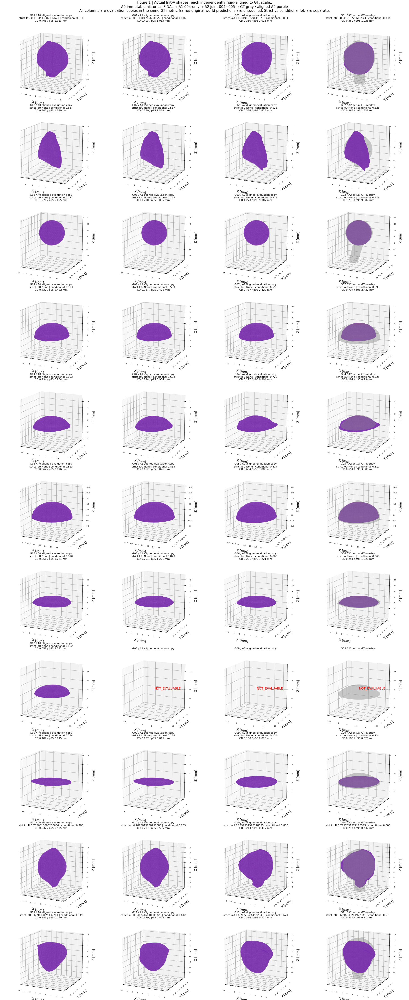
技术报告 · 结果卡 · 全组形状对照 · 全组HERO · 实际SE3矩阵 · 失败台账 · 运行清单
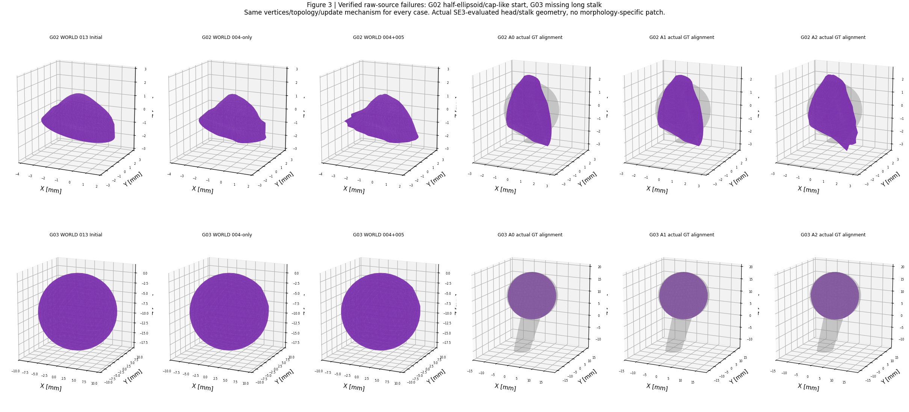
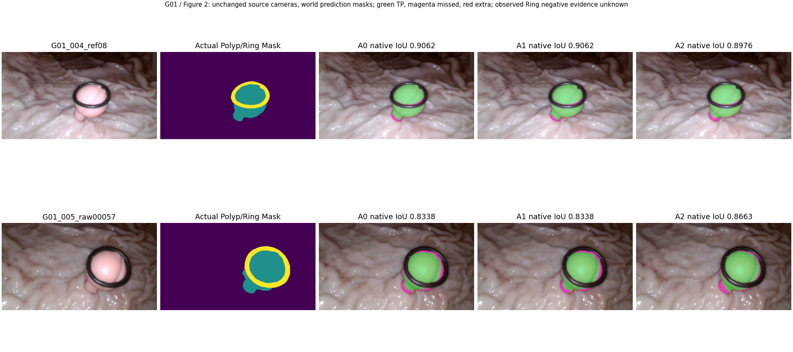
完整原始HERO曲面交互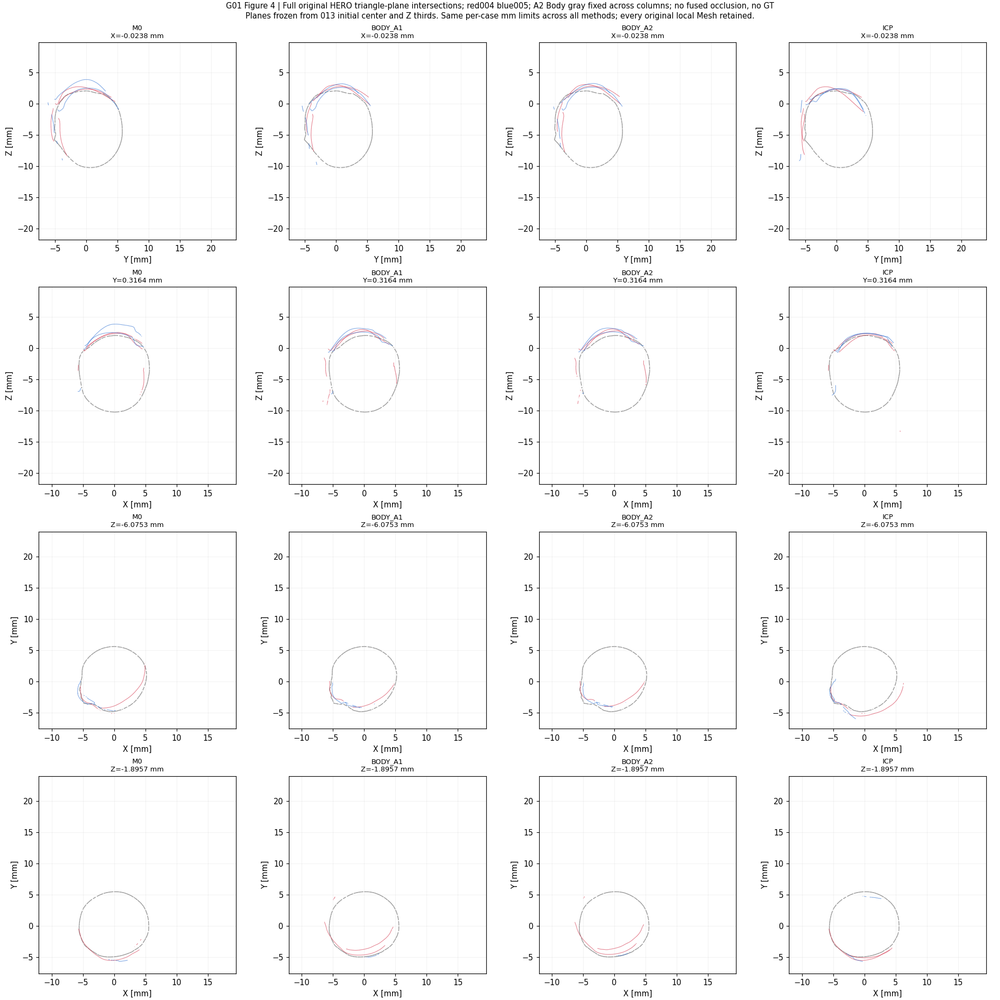
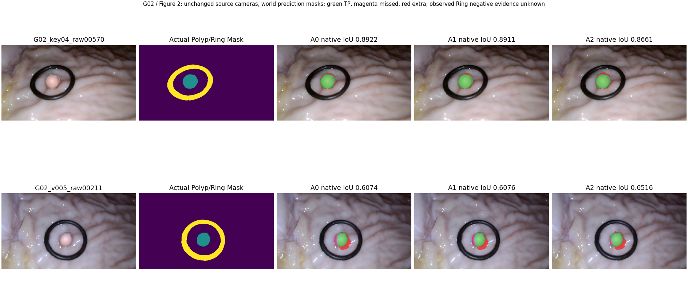
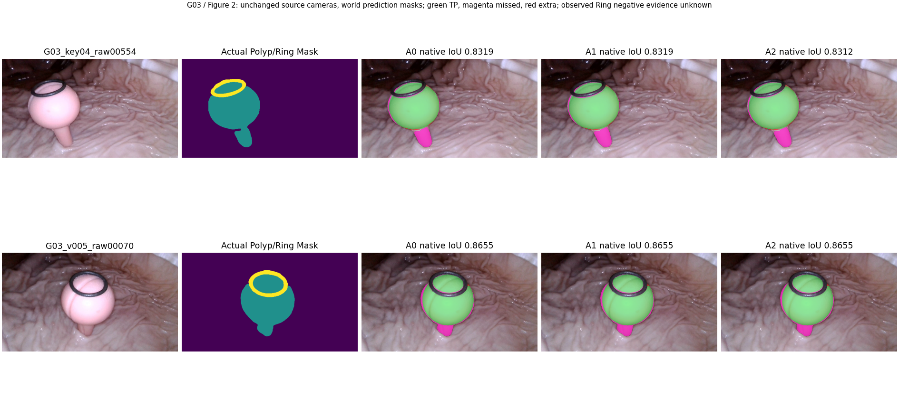
完整原始HERO曲面交互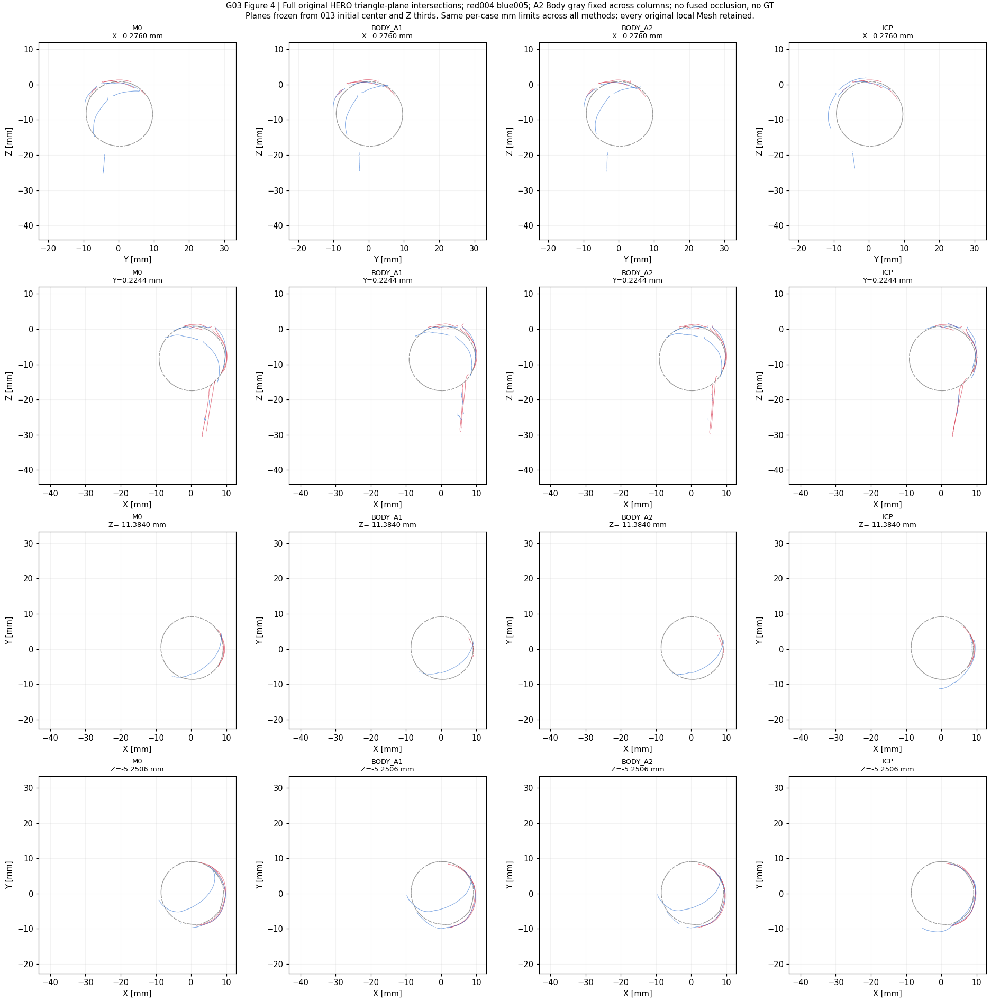
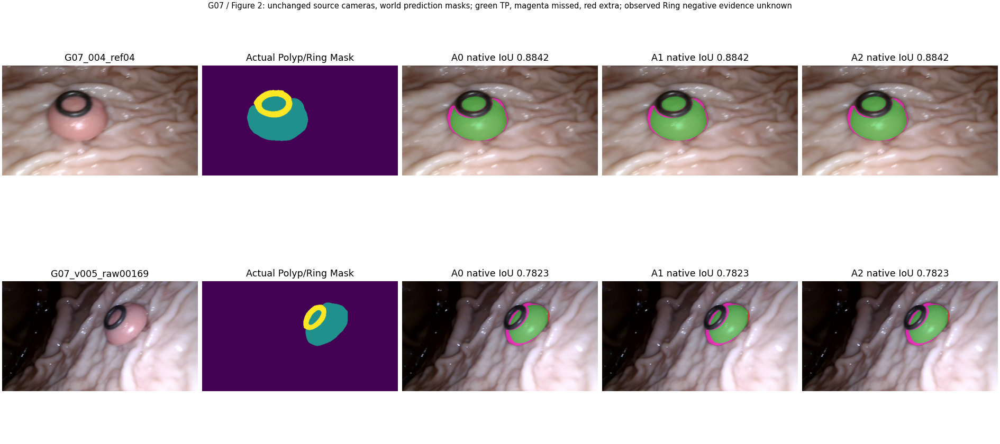
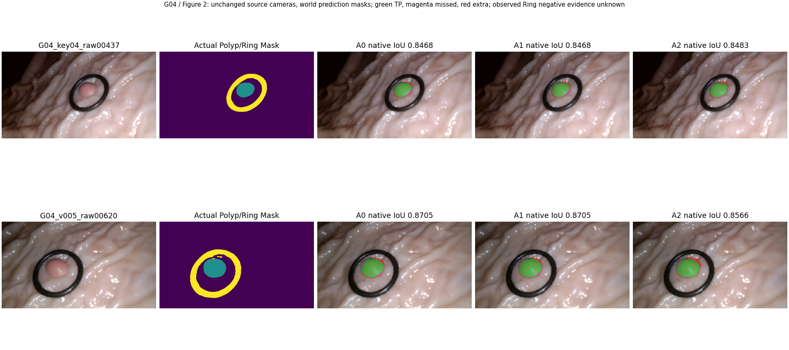
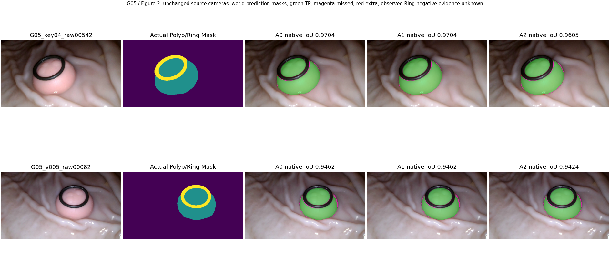
完整原始HERO曲面交互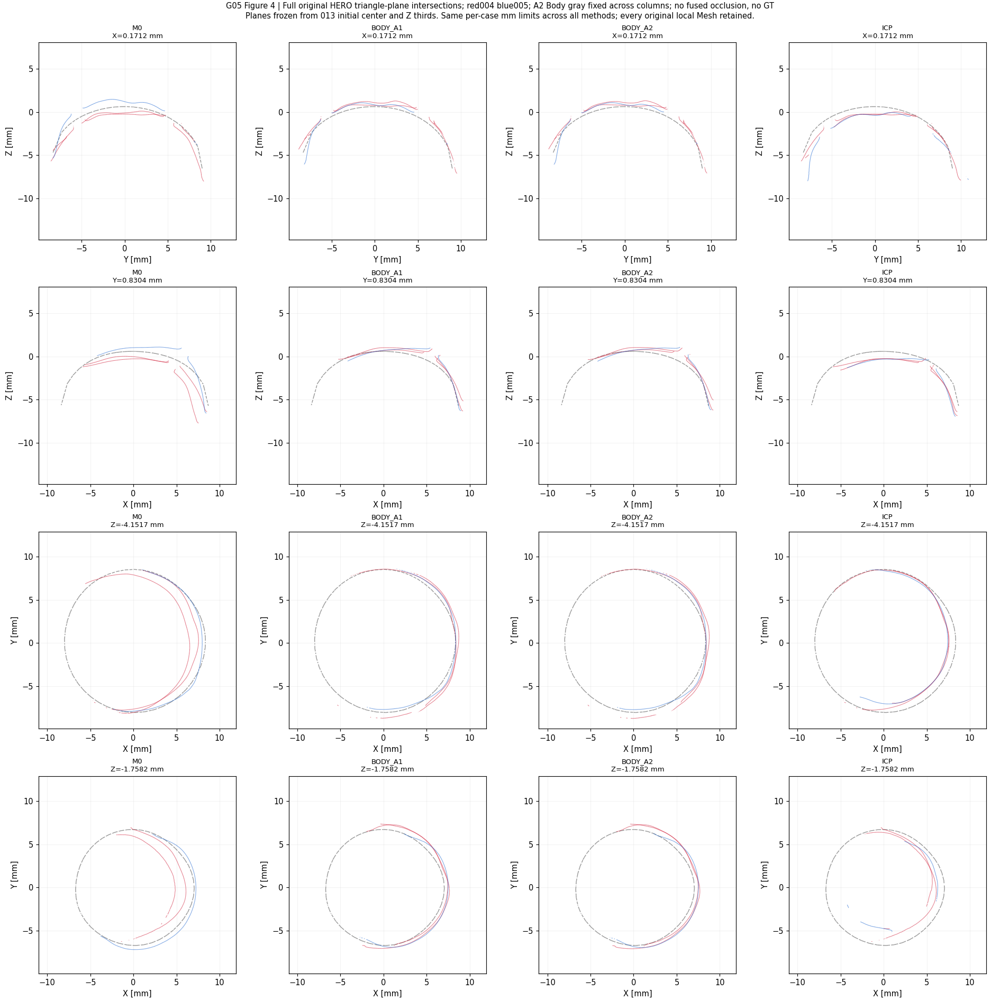
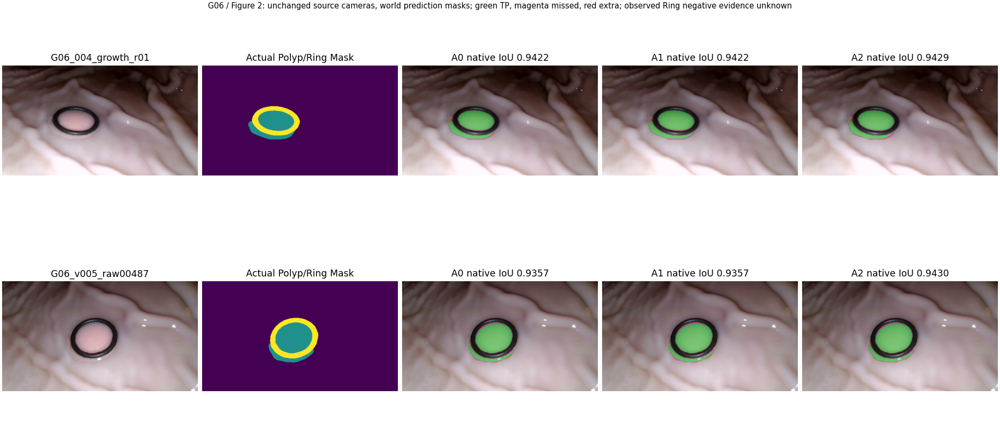
完整原始HERO曲面交互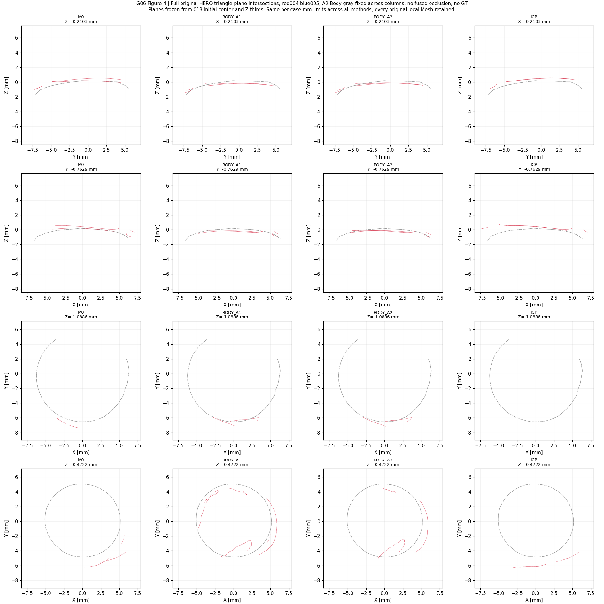
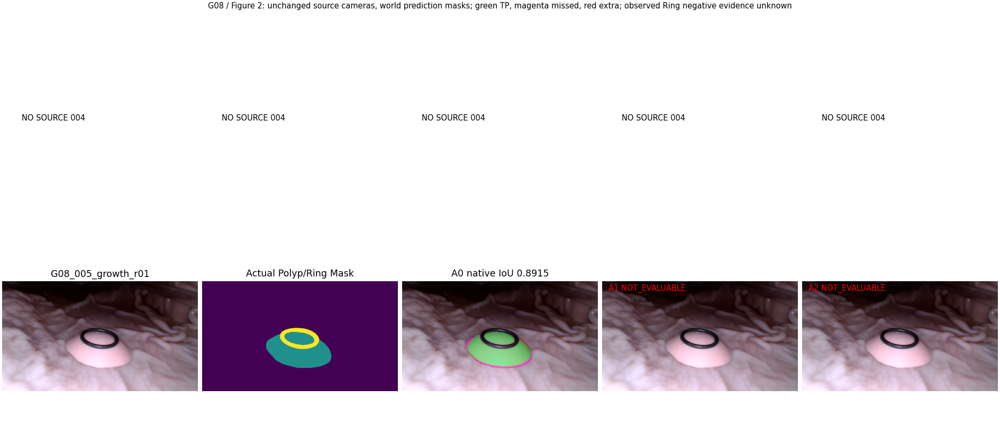
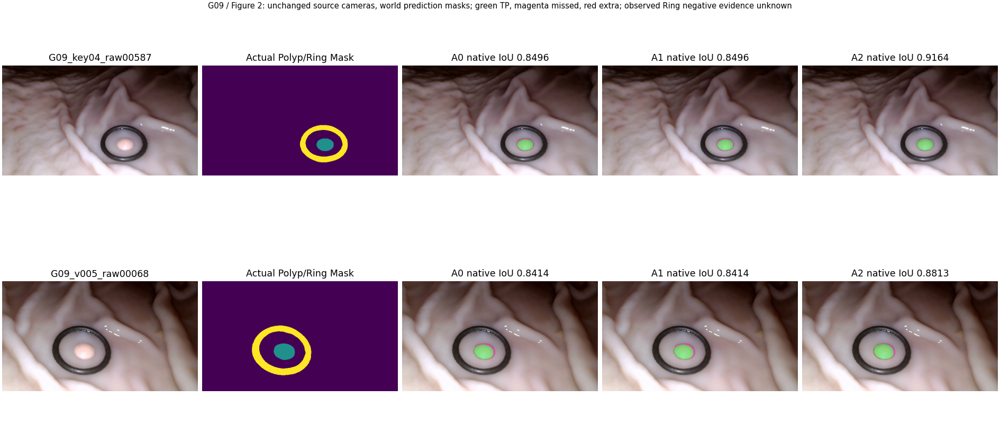
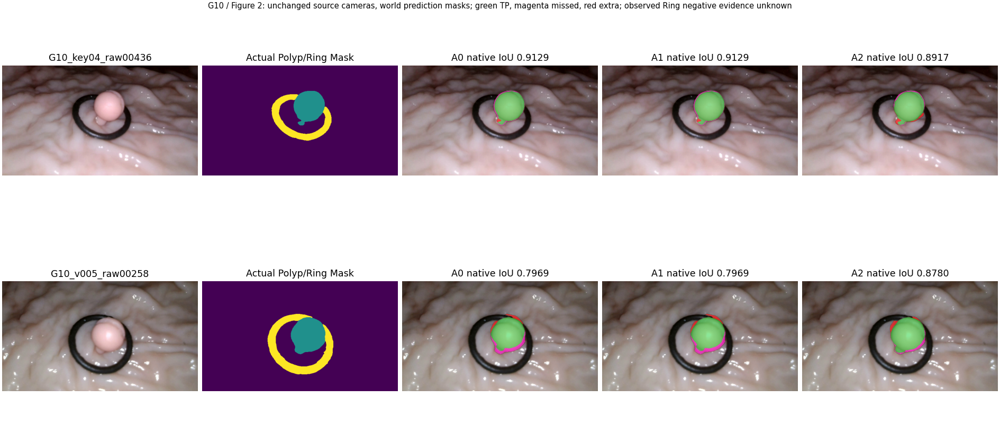
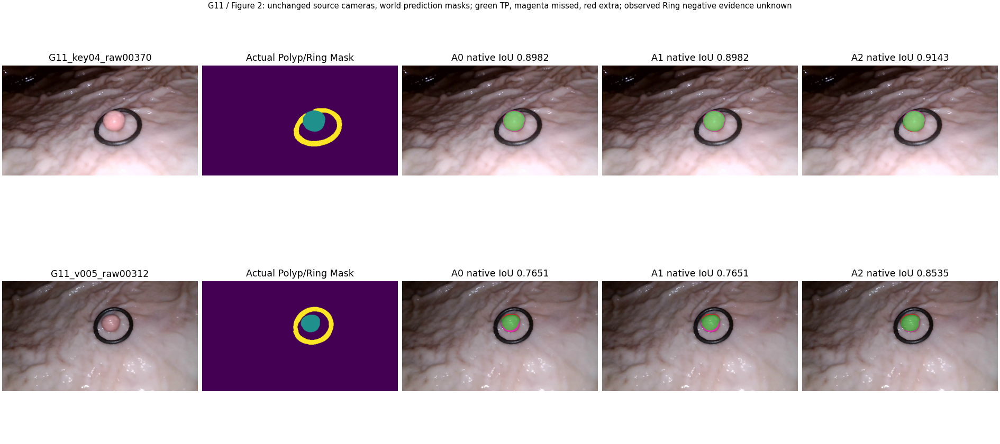